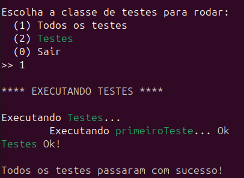

O xutest pode ser utilizado para criação e execução de testes unitários
em C/C++.
Instalação
Para instruções de como instalar o xutest, acesse:
como instalar.
Um primeiro exemplo
Crie o arquivo "main.cpp" em seu projeto com o seguinte conteúdo:
#include <xutest/xutest.h>
TEST_CASE( primeiroTeste, Testes ) {
int a = 1;
int b = 1;
int c = 2;
ASSERT_EQUALS( a, b, )
ASSERT_TRUE( a == b, )
ASSERT_FALSE( a == c, )
}
int main() {
RUN_ALL_TEST_CASES();
return 0;
}
Agora compile o projeto acima com o seguinte comando:
Se estiver no windows faça:
g++ -o main.exe main.cpp -lxutest
Se estiver no linux faça:
g++ -o main main.cpp -lxutest -ldl -rdynamic
Se estiver no linux, não esqueça das opções -ldl e -rdynamic.
Agora execute o executável criado que tem o nome "main", se
estiver no linux e "main.exe", se estiver no windows. Exemplos:
Se estiver no windows faça:
.\main.exe
Se estiver no linux faça:
./main
Agora você deve visualizar a seguinte saída:

Multiplos arquivos de teste
Se precisar dividir os testes em vários arquivos. Por exemplo, um
arquivo por classe de casos de teste, pode fazer conforme a seguir:
Suponha que agora você tem o arquivo "main.cpp" e o arquivo "tests.h",
veja abaixo o conteúdo de "test.h":
Perceba que o arquivo "tests.h" está sendo incluído em "main.cpp", mesmo
sem ter uma de suas funções, métodos, classes, ou outro recurso diretamente
chamados no arquivo "main.cpp". Isso é obrigatório. Isto é, para que as definições
de casos de testes sejam encontradas, é necessária a inclusão do arquivo
"tests.h".
A macro RUN_TEST_CASES_MENU
A macro RUN_TEST_CASES_MENU, pode ser utilizada como alternativa a
RUN_ALL_TEST_CASES. A diferença é que RUN_TEST_CASES_MENU mostra um
menu para o usuário escolher se deseja mostrar todos os testes ou os testes
de uma determinada classe. Já RUN_ALL_TEST_CASES, mostra diretamente todos os
testes. Exemplo:
#include <xutest/xutest.h>
TEST_CASE( teste, Testes ) {
int a = 1;
int b = 1;
int c = 2;
ASSERT_EQUALS( a, b, )
ASSERT_TRUE( a == b, )
ASSERT_FALSE( a == c, )
}
int main() {
RUN_TEST_CASES_MENU();
return 0;
}
Integrando com o cbuild
Para integrar com o cbuild, basta criar o CBuildFile na raiz do
projeto e executar os testes com o cbuild e as seguintes tarefas:
test, testbuild ou testbuildall
Para tanto, é necessário definir as propriedades "src.dir", "test.dir"
e "test.libs" no CBuildFile.
Se estiver no linux, é necessário também definir a propriedade
"test.linker.params"
Caso não tenha instalado o xutest e quiser incluí-lo manualmente no
projeto, precisa definir também as propriedades "test.include.dirs",
"test.lib.dirs".
Se o xutest já estiver instalado no sistema operacional, não precisa definir
as propriedades "test.include.dirs", "test.lib.dirs" e "test.libs".
Atenção: A propriedade "src.dir" deve ser definida e ter valor diferente do
diretório raiz do projeto ou parente dele.
Após configurado o CBuildFile com os caminhos dos includes, lib do xutest e
parâmetros para o comando que linka os arquivos de teste, é só criar os testes
na pasta da propriedade "test.dir".
Veja abaixo o exemplo de configuração básica do script CBuildFile:
src.dir=src
test.dir=test
test.libs=xutest
IF os != "windows"
# interpretado somente se estiver no linux
test.linker.params=-ldl -rdynamic
ENDIF
O exemplo acima assume que a pasta de testes é a pasta "test".
Caso não tenha instalado o cbuild e quiser inclur manualmente, faça
conforme o seguinte exemplo:
src.dir=src
test.dir=test
test.include.dirs=include
test.lib.dirs=.
test.libs=xutest
IF os != "windows"
# interpretado somente se estiver no linux
test.linker.params=-ldl -rdynamic
ENDIF
O exemplo acima assume que o diretório onde deve procurar o arquivo
"libxutest.a" é o diretório corrente. Para outro diretório, é só
alterar "test.lib.dirs". Claro, o exemplo acima assume que o nome da
static library do xutest tem o nome "libxutest.*", onde o "*" geralmente
corresponde a "a" ou "lib". Esse exemplo assume também que a os arquivos
de cabeçalho do xutest estão na pasta "include".
Agora, seguindo o exemplo anterior, siga os seguintes passos:
crie uma pasta "src" e uma pasta "test".
Copie o arquivo "main.cpp" para a pasta "test".
Agora execute o seguinte comando:
cbuild testbuildall
Você deve ver agora a seguinte saída:
Como incluir o xutest sem instalar
Para incluír o xutest no projeto sem instalar, baixe o xutest da
página downloads, e então, extraia o arquivo
baixado e coloque o arquivo "libxutest.a" e a pasta "include" na raiz do
seu projeto. Seu projeto helloworld deve ter agora a seguinte estrutura:
Agora execute o seguinte comando para compilar e linkar:
Se estiver no linux faça:
g++ -o main main.cpp -lxutest -L. -Iinclude -ldl -rdynamic
Se estiver no windows faça:
g++ -o main.exe main.cpp -lxutest -L. -Iinclude
Foram acrescentadas as opções "-L." e "-Iinclude", onde, "-L."
especifica onde procurar pela static library. Nesse caso, a lib de
nome: "libxutest.a" que está na raiz do projeto. Por isso o ".". E
o "-Iinclude" especifica onde encontrar os arquivos header que, nesse
caso, está na pasta "include". A opção "-lxutest" deve corresponder ao
nome da lib, sem o prefixo "lib" e sem a extenção ".a". Isto é, "xutest".
Agora você pode rodar o arquivo linkado: O "main.exe" se estiver no windows ou
"main", se estiver no linux e, então, visualizar o resultado.
A macro TEST_CASE
Na macro TEST_CASE, fica a escrita do caso de teste em si. Isto é, as
chamadas as macros de ASSERT.
O primeiro argumento passado a TEST_CASE, é o nome do caso de teste e o
segundo argumento (opcional) é o nome da classe do caso de teste. Se não
quiser informar, o caso de teste é vinculado a classe de nome "default" e,
a virgula após o nome do caso de teste é obrigatória, mesmo que, após a virgula,
não seja definido o nome da classe do caso de testes. Veja o exemplo abaixo:
As macros de assert suportam uma mensagem personalizada a ser mostrada
no caso do assert falhar e não precisam ser finalizadas com ponto e vírgula.
No caso da macro ser chamada, por exemplo, dentro de um if/else sem blóco de
código, é obrigatório não colocar o ponto e virgula no final da macro. Exemplo:
O exemplo acima está errado porque há um ponto e virgula após a macro de
assert, e antes do else do if. O correto é retirar o ponto e virgula como a
seguir:
A macro de assert pode ser utilizada para testar se dois valores
são iguais. Exemplos:
ASSERT_EQUALS( 1, 1, )
int a = 1;
int b = 1;
string c = "teste";
string d = "teste";
ASSERT_EQUALS( a, b, )
ASSERT_EQUALS( c, d, As strings não são iguais! )
No exemplo acima, são comparadas duas variáveis inteiras e duas
variáveis tipo string. Perceba que no último assert, é passada como
terceiro argumento, uma mensagem. Essa mensagem é mostrada, apenas
se o assert falhar. Perceba que a mensagem não está entre aspas duplas.
As aspas duplas não são necessárias. Caso contrário, as aspas duplas
também são impressas.
Perceba também que, os asserts sem a mensagem a ser mostrada em
caso de falha, têm uma virgula após os parâmetros e antes do
fecha parenteses. Essa virgula é necessária, mesmo que o terceiro argumento
não seja informado. Isso vale para todas as macros de assert e a macro
TEST_CASE.
A macro ASSERT_NOT_EQUALS
É o contrário da macro ASSERT_EQUALS. Isto é, falha se os valores
forem iguais. Exemplo:
Você pode desabilitar, ou habilitar, a impressão dos vetores
no caso de falha no assert. Isso é útil para evitar impressão de
vetores, caso eles tenham muitos elementos, por exemplo.
Para habilitar, ou desabilitar a impressão de vetores
(ou arrays) na falha do assert, utilize a seguinte função:
xutest::set_print_vectors( true ); // Para habilitar
xutest::set_imp_vectors( false ); // para desabilitar
Esta função set_print_vectors está no header "xutest.h"
e no namespace xutest. Agora, veja abaixo dois exemplos:
Os vetores não são impressos, pois, apesar de o assert falhar, a flag de impressão
de vetores está setada para false.
A macro ASSERT_TRUE
A macro assert true testa se uma condição é verdadeira. Exemplo:
int a = 1;
ASSERT_TRUE( a > 0, )
A macro ASSERT_FALSE
A macro assert false testa se uma condição é falsa. Exemplo:
int a = 1;
ASSERT_FALSE( a == 0, )
A macro ASSERT_NULL
A macro ASSERT_NULL testa se o ponteiro aponta
para nullptr ou NULL. Exemplo:
string* strptr = nullptr;
ASSERT_NULL( strptr, )
A macro ASSERT_NOT_NULL
A macro ASSERT_NOT_NULL testa se o ponteiro não aponta, nem
para nullptr, nem para NULL. Exemplo:
string* strptr = new string( "abc" );
ASSERT_NOT_NULL( strptr, )
A macro ASSERT_THROWS
A macro ASSERT_THROWS testa se uma determinada exceção foi lançada.
Exemplo:
ASSERT_THROWS( runtime_error, {
// Código qualquer
throw runtime_error( "XXX" ); // lança uma runtime_error
}, );
A macro ASSERT_NOT_THROWS
A macro ASSERT_THROWS testa se uma determinada exceção não foi lançada.
Exemplo:
ASSERT_NOT_THROWS( runtime_error, {
// Código qualquer
}, );
O assert passa se o código dentro do bloco de código do ASSERT_NOT_THROWS
não lançar uma exceção "runtime_error".
As macros BEFORE_ALL e AFTER_ALL
As macros BEFORE_ALL e AFTER_ALL, podem ser usadas para definir um
bloco de código que deve ser executado antes de todos os testes da classe,
ou, após todos os testes da classe, respectivemante.
A macro BEFORE_ALL
A macro BEFORE_ALL pode ser usada para definir o que deve ser
executado antes de todos os testes da classe de casos de teste.
Exemplo:
BEFORE_ALL( MeusTestes ) {
cout << "Iniciando os testes da classe de testes MeusTestes" << endl;
}
TEST_CASE( teste1, MeusTestes ) {
ASSERT_EQUALS( 1, 1, )
}
TEST_CASE( teste2, MeusTestes ) {
ASSERT_TRUE( true, )
}
A mensagem do "cout" da definição BEFORE_ALL, é impressa antes de todos
os testes da classe MeusTestes.
A macro AFTER_ALL
A macro AFTER_ALL pode ser usada para definir o que deve ser
executado depois de todos os testes da classe de casos de teste.
Exemplo:
AFTER_ALL( MeusTestes ) {
cout << "Finalizando os testes da classe de testes MeusTestes" << endl;
}
A mensagem do "cout" da definição AFTER_ALL, é impressa após de todos
os testes da classe MeusTestes.
As macros BEFORE_EACH e AFTER_EACH
As macros BEFORE_EACH e AFTER_EACH, podem ser usadas para definir um
bloco de código que deve ser executado antes de cada caso de teste da classe,
ou, após cada caso de teste da classe, respectivemante.
A macro BEFORE_EACH
A macro BEFORE_EACH pode ser usada para definir o que deve ser
executado antes de cada caso de teste da classe de casos de teste.
Exemplo:
BEFORE_EACH( MeusTestes ) {
cout << "Iniciando execução do caso de teste" << endl;
}
A mensagem do "cout" da definição BEFORE_EACH, é impressa antes de cada
caso de teste da classe MeusTestes.
A macro AFTER_EACH
A macro AFTER_EACH pode ser usada para definir o que deve ser
executado depois de cada caso de teste da classe de casos de teste.
Exemplo:
AFTER_EACH( MeusTestes ) {
cout << "Finalizando a execução do caso de teste" << endl;
}
A mensagem do "cout" da definição AFTER_EACH, é impressa após de cada
caso de teste da classe MeusTestes.
Finalizando...
E assim chegamos ao final da visão geral sobre o xutest.